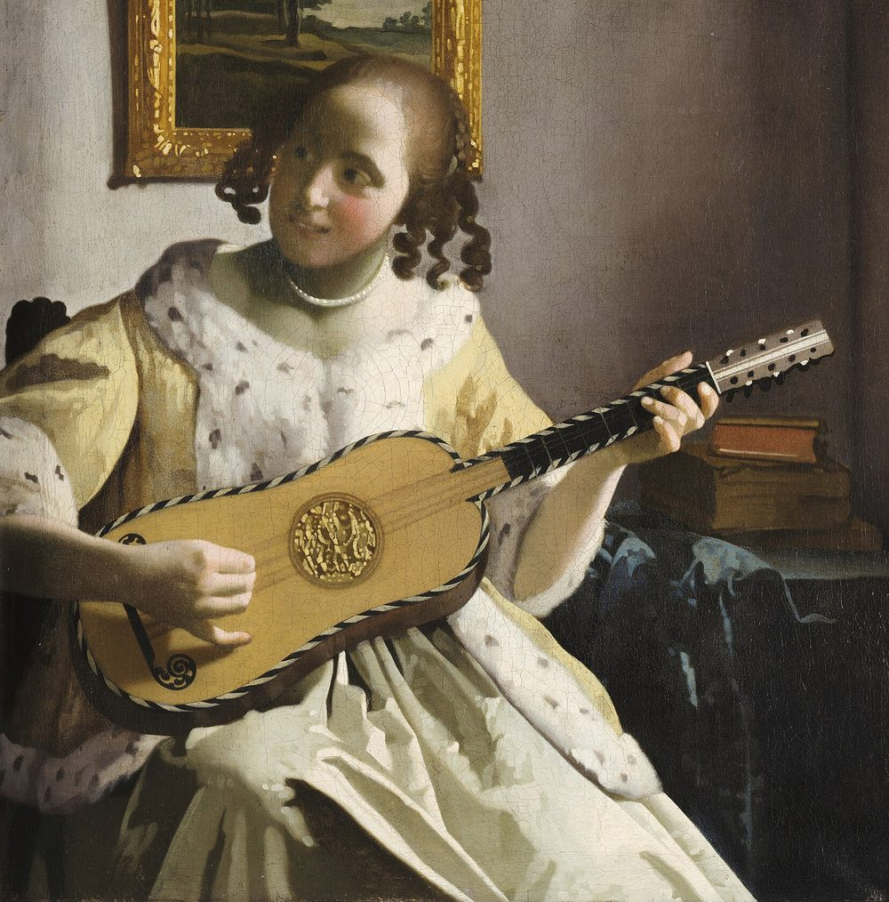

For the guitar
No songs match that search.
On GitHub, choose Fret-Finder under Repository access, then Generate.
Scan with your phone's camera. Whoever scans it can change your songs, so only show it to your own phone.
The dots light up in the order you play them. Runs and scales are numbered. Pale rings are the rest of the chord. The number on the left is the fret. Tap a note to hear it or move it to another string.
D.S., D.C. and coda jumps aren't written out.